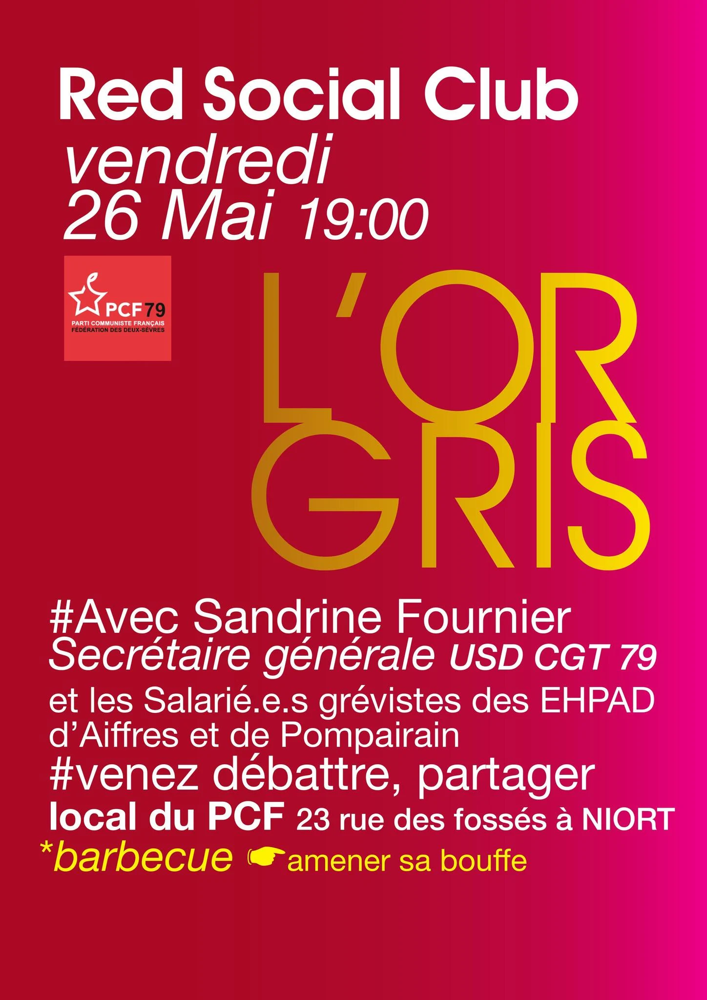

Annonce fédérale
À Niort, le Red Social Club annonce « L’Or gris » le 26 mai
Date indiquée par Facebook · 24 mai 2023
Repères éditoriaux
Le Red Social Club a annoncé une soirée le 26 mai à 19 h autour de « L’Or gris ». L’affiche nomme les intervenantes et indique le pique-nique partagé prévu après la rencontre.
Texte conservé avec la publication
Red Social Club organisé ce vendredi 26 mai à 19 heures (pique-nique partagé pour terminer) au siège de la Fédération du PCF79, 23 rue des Fossés à Niort.
Son thème "OR GRIS" trouve son actualité dans les luttes dans de nombreuses EPHAD d'Orpéa, Korian, et autres groupes privés... où la recherche du profit prime sur les conditions d'accueil des ainé.es et sur les salaires et conditions de travail des professionnel.le.s
Ici en Deux-Sèvres, en ce moment, ce sont les salarié.es de l'EPHAD d'Aiffres (appartenant à Médicharme) qui sont en grève depuis plusieurs semaines, soutenu.es par la CGT, POUR OBTENIR DES MOYENS HUMAINS ET FINANCIERS NÉCESSAIRES À L’AMÉLIORATION DE LEURS SALAIRES ET CONDITIONS DE TRAVAIL ET POUR RETROUVER HUMANITÉ ET DIGNITÉ DANS LA PRISE EN CHARGE DES AINÉ.ES, comme leurs collègues de l'EPHAD de Pompairain (du groupe DOMUSVi) en 2021.
Venez débattre avec ces salarié.es, les soutenir et partager un moment de convivialité. Cette soirée est ouverte à tous.
#DeuxSèvres
#EPHAD
#social

Sources
Archive rouge · export Facebook · AR-0002-FB-01645
À lire aussi · Bonne année 2026 de la part du PCF des Deux-Sèvres